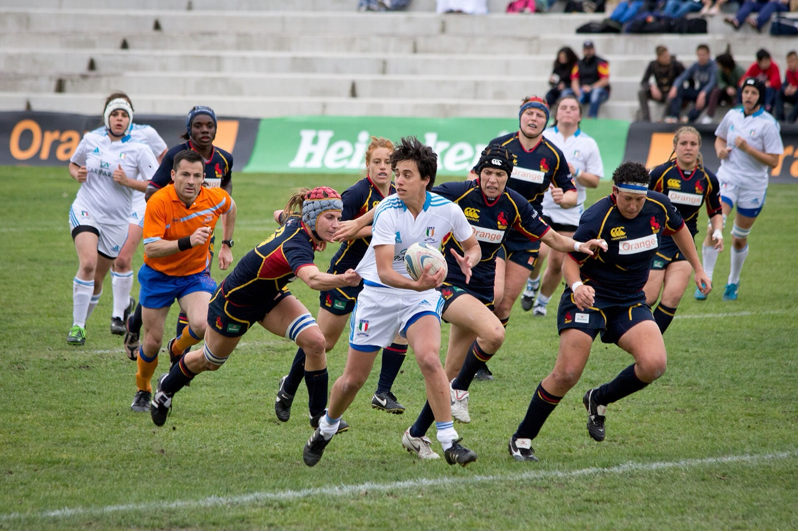
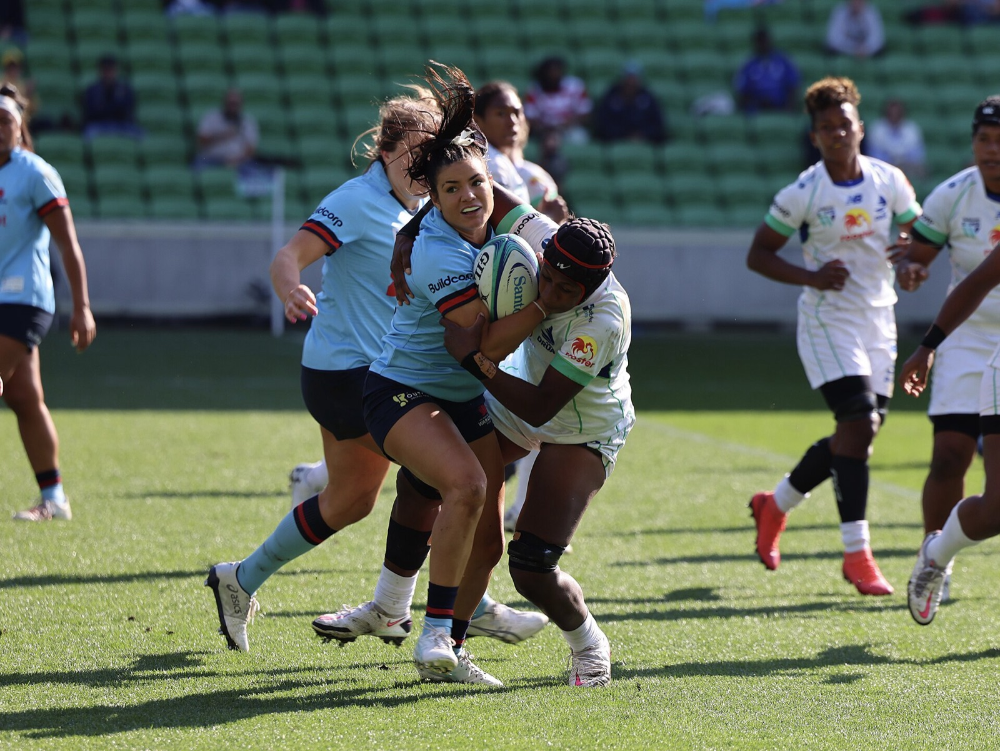
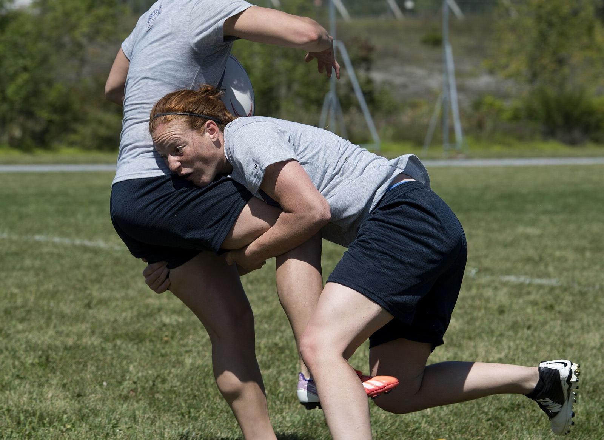
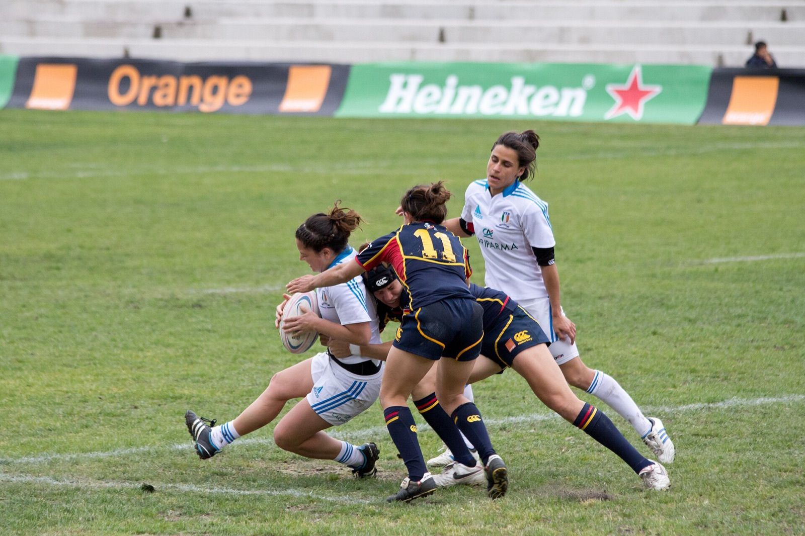
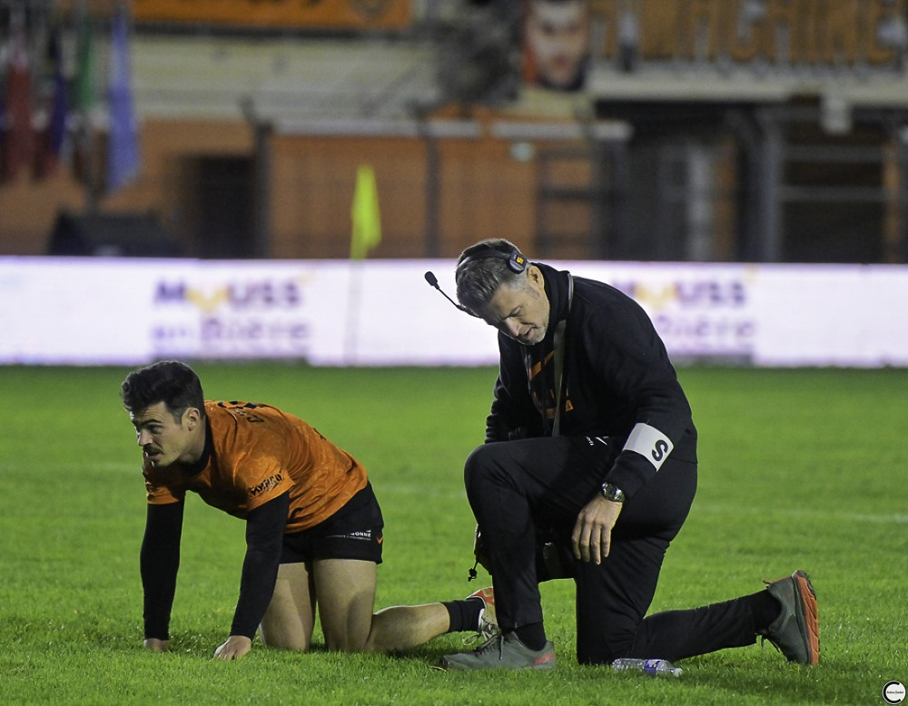
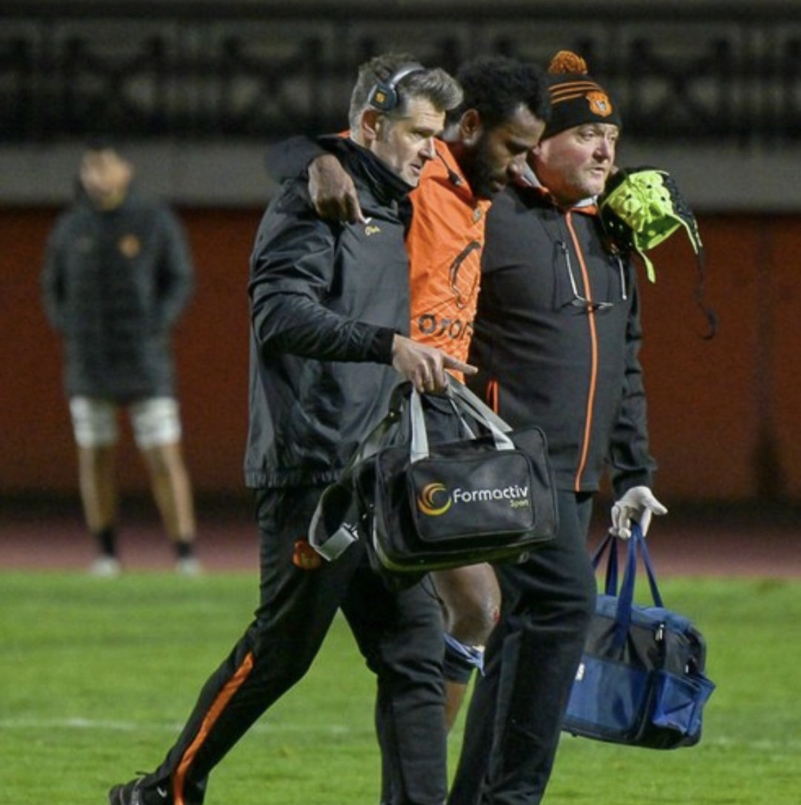

Le rugby féminin se joue avec les mêmes règles et la même intensité que le rugby masculin. Photo : Carlos Delgado, CC BY-SA 3.0, via Wikimedia Commons.
De plus en plus de filles et de femmes jouent au rugby, et c'est une excellente nouvelle : c'est un sport complet, collectif, qui forge la confiance en soi. Mais c'est aussi un sport de contact, et la commotion cérébrale y est l'une des blessures les plus fréquentes.
Faut-il s'inquiéter davantage pour une joueuse que pour un joueur ? Pour une adolescente que pour une adulte ? Et surtout, que peut-on faire concrètement pour la protéger ? C'est ce que cet article vous explique.
Une commotion, c'est quoi exactement ?
Le cerveau flotte à l'intérieur du crâne, un peu comme un œuf dans sa coquille. Quand la tête subit une accélération brutale, le cerveau est secoué contre les parois du crâne. Pendant plusieurs jours, voire plusieurs semaines, il fonctionne au ralenti : c'est la commotion.
Trois idées reçues à oublier :
- « Il faut perdre connaissance. » Faux : dans la grande majorité des commotions, le joueur ne perd pas connaissance.
- « Il faut un choc direct à la tête. » Faux : un violent coup du lapin, quand la tête part brutalement en arrière ou sur le côté, suffit. Dans une enquête auprès de joueuses britanniques, seulement 1 sur 8 le savait.
- « Ça se voit tout de suite. » Pas toujours : les symptômes peuvent apparaître ou s'aggraver dans les heures qui suivent.
Les filles sont-elles plus exposées ?
La réponse dépend de l'âge.
- Chez les adultes, la plus grande synthèse des études publiées (près de 100 études) ne montre pas de différence entre femmes et hommes au rugby.
- Chez les adolescentes, en revanche, le risque paraît plus élevé que chez les garçons du même âge, et la commotion est leur blessure la plus fréquente. Dans certaines compétitions de jeunes, elle représente jusqu'à 4 blessures sur 10 chez les moins de 16 ans.
Pourquoi l'adolescence ? Plusieurs raisons se combinent : un cou encore peu musclé, une technique de plaquage en cours d'apprentissage, des écarts de gabarit importants entre joueuses d'une même catégorie, et un cerveau encore en développement. Beaucoup de joueuses commencent aussi le rugby plus tard que les garçons, avec moins d'heures d'apprentissage technique derrière elles.
Le risque ne tient pas surtout au fait d'être une fille. Il tient à ce qu'on apprend aux joueuses, à la façon dont on les surveille et à leur liberté de dire qu'elles ne vont pas bien. Ce sont trois choses sur lesquelles un club et une famille peuvent agir.
Le cou, premier bouclier du cerveau
Imaginez une boule de bowling posée au bout d'un manche. Plus le manche est solide, moins la boule part dans tous les sens au moindre choc. Le cou joue ce rôle pour la tête : des muscles du cou plus forts freinent mieux la tête au moment de l'impact.
Or, en moyenne, les femmes ont environ moitié moins de force dans le cou que les hommes. En laboratoire, pour un même choc, leur tête subit une accélération plus forte. Chez les rugbymen, les programmes de renforcement du cou ont été associés à près de deux fois moins de commotions. Chez les joueuses, ce bénéfice n'a pas encore été mesuré, mais le raisonnement est le même, et ce travail est simple à mettre en place en club avec une bande élastique.
Le cou ne sert pas qu'à encaisser. Il informe aussi le cerveau de la position de la tête. Chez des joueuses de haut niveau, celles qui avaient eu une commotion dans l'année percevaient moins bien la position de leur tête, même quand elles n'avaient plus aucune douleur. C'est un déficit discret, mais il se rééduque.
Le plaquage : là où tout se joue
Au rugby, la grande majorité des commotions surviennent au plaquage. Et ce sont les mêmes erreurs qui coûtent cher chez les femmes et chez les hommes : plaquer trop haut, plaquer redressée, et mettre la tête du mauvais côté. Une étude sur le rugby féminin de haut niveau montre qu'un contact de la tête contre l'épaule de l'adversaire multiplie le risque par 10 par rapport à un contact contre le torse.

À éviter : un plaquage haut. Le bras remonte vers les épaules et le cou de la porteuse, et les deux têtes se retrouvent très proches. Photo : DFAT / Sarah Friend, CC BY 4.0, via Wikimedia Commons.

Le bon geste : buste abaissé, épaule au niveau des cuisses, tête placée sur le côté de l'adversaire (« joue contre fesse »), bras qui enserrent les jambes. Photo : Sgt. Jose Torres, US Air Force, domaine public.
Les 4 points clés du plaqueur
- Viser bas : sous la ceinture, à hauteur des cuisses.
- S'abaisser avant le contact : jambes fléchies, dos plat, ne jamais arriver redressée.
- Tête sur le côté de l'adversaire, jamais devant sa course ni contre sa hanche.
- Regarder sa cible jusqu'au contact, menton relevé, et serrer les bras.
Chez les joueuses, les commotions sont aussi nombreuses quand on est plaquée ou dans les regroupements. Il faut donc apprendre aussi à tomber.

Être plaquée, ça s'apprend aussi : menton rentré vers la poitrine, ballon serré, on tombe sur l'épaule et le côté, jamais tête la première. Photo : Carlos Delgado, CC BY-SA 3.0, via Wikimedia Commons.
Ces gestes s'apprennent d'abord à genoux puis au ralenti, sur boucliers ou boudins, avant d'aller vers l'opposition réelle. Pour une joueuse qui découvre le rugby à 14 ou 15 ans, ce temps d'apprentissage est la meilleure protection qu'on puisse lui offrir.
Reconnaître une commotion sur le terrain
Une commotion ne se voit pas toujours. Voici les signes qui doivent faire sortir une joueuse immédiatement :
Ce que vous pouvez observer
- elle reste au sol sans bouger, ou se relève lentement ;
- elle titube, perd l'équilibre, se tient la tête ;
- elle a le regard vide, semble perdue, ne sait plus le score ou l'adversaire ;
- elle a perdu connaissance, même quelques secondes.
Ce qu'elle peut ressentir
- maux de tête, sensation de « pression » dans la tête ;
- vertiges, nausées, vision trouble ;
- sensibilité à la lumière ou au bruit ;
- impression d'être « dans le brouillard », fatigue soudaine, irritabilité ou envie de pleurer.

Au moindre doute après un choc, on s'arrête et on évalue. Ici, au bord du terrain avec le RC Narbonnais.
Dans le doute, on sort. Et on ne revient pas jouer le même jour, même si « ça va mieux ».
Le vrai danger : se taire
Dans une enquête auprès de joueuses britanniques, 4 sur 10 reconnaissent avoir déjà caché une commotion, surtout lors des matchs importants, pour ne pas laisser tomber l'équipe ou perdre leur place.
C'est le comportement le plus dangereux. Une joueuse qui continue de jouer avec une commotion réagit moins vite, se met en danger au plaquage, et peut recevoir un second choc avant que son cerveau ait récupéré. Les études montrent aussi que continuer à jouer après le choc allonge nettement la récupération.

Sortir du terrain n'est pas un aveu de faiblesse : c'est protéger sa saison. Ici avec le staff médical du RC Narbonnais.
Le rôle des adultes autour d'elle est décisif :
- Entraîneurs : dire clairement, devant tout le groupe, que déclarer un symptôme est la bonne attitude, et ne jamais mettre de pression pour une reprise rapide.
- Coéquipières : signaler une partenaire qui semble « bizarre » après un choc, c'est la protéger.
- Parents : poser la question après chaque match (« tu as pris un coup à la tête ? ») et observer le comportement le soir et le lendemain.
Après une commotion : récupérer sans brûler les étapes
Dans le rugby féminin, une commotion entraîne en moyenne plus d'un mois d'arrêt. On a longtemps pensé que les filles récupéraient moins vite par nature. En réalité, une grande partie de l'écart vient du fait qu'elles consultent plus tard : quand on en tient compte, la différence disparaît.
Les bons réflexes :
- Consulter un médecin rapidement, dans les 24 à 48 heures, même si les symptômes semblent légers.
- Repos relatif les premiers jours, sans s'enfermer dans le noir : une activité calme, une marche légère et un retour progressif aux écrans et aux cours sont conseillés.
- Reprendre par étapes, du footing léger jusqu'au contact, avec l'accord du médecin à la fin.
- Penser au cou : douleurs cervicales, maux de tête qui partent de la nuque ou vertiges qui traînent méritent d'être évalués.
Prévenir : ce qui marche vraiment
1. L'échauffement neuromusculaire, 3 fois par semaine
C'est la mesure la mieux démontrée. Un programme d'échauffement associant équilibre, renforcement de tout le corps, sauts et apprentissage des réceptions et changements d'appui a fait baisser les commotions de près de 60 % chez les jeunes joueurs qui le pratiquaient au moins 3 fois par semaine. Il ne demande aucun matériel, seulement de la régularité.
2. Le renforcement du cou
Quelques minutes, intégrées à l'échauffement : poussées de la tête contre la main ou contre une bande élastique, dans toutes les directions, en gardant la tête immobile. C'est simple, sans risque quand c'est progressif, et cela renforce le premier bouclier du cerveau.
3. Le protège-dents
Dans les sports de collision, il est associé à environ un quart de commotions en moins. Il protège aussi les dents et la mâchoire. Il devrait être systématique, à l'entraînement comme en match.
4. Apprendre à plaquer et à tomber
Plaquer bas, tête sur le côté, et savoir chuter quand on est plaquée. Le rugby amateur évolue d'ailleurs dans ce sens : World Rugby recommande désormais un plaquage plus bas, sous le sternum. En Irlande, chez les femmes adultes amateurs, les commotions au plaquage ont fortement baissé après ce changement de règle.
Et le casque ?
Le casque souple protège des coupures et des oreilles abîmées, mais il ne protège pas de la commotion. Le cerveau bouge à l'intérieur du crâne, que la tête soit casquée ou non. Il ne doit surtout pas donner un faux sentiment de sécurité.
Le rôle de l'ostéopathe du sport
Je ne pose pas le diagnostic de commotion et je n'autorise pas la reprise : c'est le rôle du médecin. En complément, et en lien avec le suivi médical, j'interviens sur trois plans :
- En début de saison : un bilan du cou (force, mobilité, perception de la position de la tête), qui sert aussi de point de comparaison en cas de choc ;
- Après une commotion : la composante cervicale (douleurs, raideurs, maux de tête qui partent de la nuque, perception de la position de la tête) ;
- En fin de récupération : l'équilibre, les appuis et la réactivité, avant le retour au contact.
En résumé
- Une commotion peut survenir sans perte de connaissance et sans choc direct à la tête.
- Les adolescentes sont la population la plus exposée : c'est chez elles que la prévention compte le plus.
- Le cou est le premier bouclier du cerveau : il se renforce.
- Le plaquage se joue sur la technique : bas, buste abaissé, tête sur le côté. Et on apprend aussi à tomber.
- Dans le doute, on sort, on consulte vite, et on ne cache jamais ses symptômes.
- La prévention la plus efficace : échauffement neuromusculaire 3 fois par semaine, renforcement du cou et protège-dents.
Une joueuse bien formée, bien préparée et libre de dire « je ne me sens pas bien » est une joueuse protégée.
Maux de tête qui s'aggravent, vomissements répétés, somnolence anormale, confusion, convulsions, faiblesse ou fourmillements d'un membre, perte de connaissance. Cet article a une visée d'information et de prévention ; il ne remplace pas une consultation médicale.
Pour aller plus loin : les études citées
- De Sousa-De Sousa et al. A decade of concussion in rugby: a 2014-2024 systematic review and meta-analysis update. Br J Sports Med 2026. doi:10.1136/bjsports-2025-110774
- West et al. Injury rates, mechanisms, risk factors and prevention strategies in youth rugby union: a systematic review and meta-analysis. Sports Med 2023. doi:10.1007/s40279-023-01826-z
- Ernst et al. Incidence and risk factors for sport-related concussion in female youth athletes participating in contact and collision invasion sports: a systematic review. Sports Med 2024. doi:10.1007/s40279-024-02133-x
- King et al. The incidence, cost, and burden of concussion in women's rugby league and rugby union: a systematic review and pooled analysis. Sports Med 2022. doi:10.1007/s40279-022-01645-8
- Putukian et al. Clinical recovery from concussion, return to school and sport: a systematic review and meta-analysis. Br J Sports Med 2023. doi:10.1136/bjsports-2022-106682
- Patricios et al. Consensus statement on concussion in sport: the 6th International Conference on Concussion in Sport, Amsterdam 2022. Br J Sports Med 2023. doi:10.1136/bjsports-2023-106898
- Paul et al. J Sci Med Sport 2026. doi:10.1016/j.jsams.2026.09.020
- Tierney et al. Med Sci Sports Exerc 2005. doi:10.1249/01.mss.0000152734.47516.aa
- Alvacite Cardenas et al. Does strengthening the cervical spine musculature enhance neck strength and reduce sports-related concussions in rugby and football players? A systematic literature review. J Bodyw Mov Ther 2025. doi:10.1016/j.jbmt.2025.08.023
- Farley et al. Phys Ther Sport 2026. doi:10.1016/j.ptsp.2026.101966
- Hides et al. JSAMS Plus 2026. doi:10.1016/j.jsampl.2026.100157
- Tucker et al. J Sci Med Sport 2025. doi:10.1016/j.jsams.2025.03.014
- Power et al. Sports Health 2026. doi:10.1177/19417381261474860
- Thomas et al. Phys Sportsmed 2025. doi:10.1080/00913847.2024.2439239
- Desai et al. Clin J Sport Med 2019. doi:10.1097/JSM.0000000000000646
- Hislop et al. Br J Sports Med 2017 (essai randomisé en clusters, programme Activate). doi:10.1136/bjsports-2016-097434
- Eliason et al. Br J Sports Med 2023 (méta-analyse, consensus d'Amsterdam). doi:10.1136/bjsports-2022-106656
- Guilfoyle et al. J Sci Med Sport 2026. doi:10.1016/j.jsams.2026.05.011
- Stokes et al. Int J Sports Med 2021. doi:10.1055/a-1345-9163
- World Rugby. Recommandation sur la hauteur de plaquage dans le rugby amateur, décembre 2025 (world.rugby).
Joueuse, parent ou éducateur ?
Bilan du cou en début de saison, douleurs cervicales ou équilibre à retravailler après une commotion : je vous accompagne au cabinet à Narbonne, en lien avec le suivi médical.